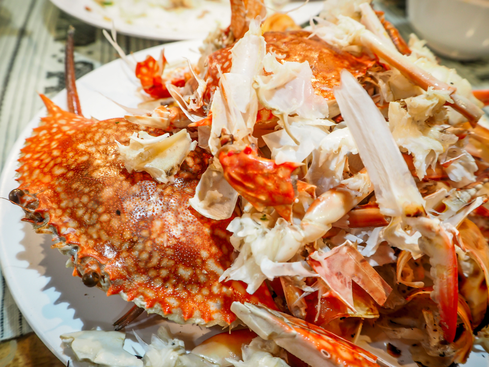

Roasted Crab Shells

Delectable, gritty, razor sharp roasted crab shells
Have you ever looked at the price of crab and thought "Outrageous! Insane! I can't afford that!"?
Well, now there's a way to enjoy these delectable decapod crustaceans for FREE!
Ingredients
- Live crabs (12-16)
- A hammer (cross pein preferred, claw will also do)
- Butter
- Montreal steak seasoning
- Baking sheet
Steps
- Remove crabs from tank in groups of 4(do NOT deviate -- if you don't have 4 left in the tank, wait for respawn)
- Place 3 crabs on slaughter table in clover pattern, eyes facing out
- Place 4th crab on slaughter table as if he were the 4th clover leaf, but facing so he is able to view his friends. Ensure at least two inches of space in the center of crab clover.
- Using your non-dominant hand, drive the hammer as hard as possible into the empty spot in the center of the crab clover. Done correctly, crabs will startle and pop out of their shells
- Scoop up the live crabs, sans shells, and place into your separate holding tank
- Melt butter in small sauce pan
- Add crab shells to melted butter, stir
- Remove crab shells from butter and place on baking sheet
- Season liberally with Montreal steak seasoning
- Roast in oven for 40 minutes at 308 degrees
- Remove from oven, serve garnished with papillon
Return to Index